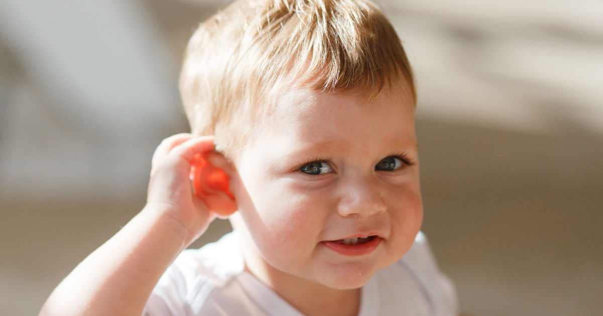

ကလေးငယ်လေးတွေကို နား သန့်ရှင်းရေး ဘယ်အချိန် လုပ်ပေးရမလဲ

ကလေးရဲ့ နားကို သန့်သန့်ရှင်းရှင်းထားဖို့က တကယ်တော့ အရေးကြီးပါတယ်။ ကလေးကို ရေချိုးပေးတဲ့အချိန်မှာ နားရွက်နဲ့ ပတ်ပတ်လည်ကို သန့်ရှင်းရေးလုပ်ပေးလို့ ရပါတယ်။ သန့်ရှင်းရေးလုပ်တဲ့အခါ အဝတ်စိုဒါမှမဟုတ် ဝါဂွမ်းလုံးနဲ့ ရေခပ်နွေးနွေးသုံးလို့ရပါတယ်။
ကလေးနားထဲက ဂျီးတွေဖယ်ထုတ်ဖို့ နားကြပ်တံ ဒါမှမဟုတ် တစ်ခုခုနဲ့ ထိုးထုတ်တာမျိုးမလုပ်သင့်ပါဘူး။ ကလေးနားထဲမှာ နားဖာချေး ရှိနေတဲ့အခါ ဖယ်ထုတ်စရာမလိုပါဘူး။ နားဖာချေးက သင့်ကလေးကို ကာကွယ်ပေးနေတာပါ။ နာဖာချေးဟာ ချောဆီအနေနဲ့ အလုပ်လုပ်ပေးပြီး ပိုးသေစေတဲ့အစွမ်းလည်း ရှိပါတယ်။ ဖယ်ထုတ်ဖို့ကြိုးစားမှသာ အန္တရာယ် ဖြစ်နိုင်ပါတယ်။
ကလေးနားကို ဘယ်လို သန့်ရှင်းရေး လုပ်ပေးမလဲ
ကလေးနားကို ပုံမှန်သန့်ရှင်းရေးလုပ်ပေးဖို့ ရေနွေးနွေးနဲ့ စိမ်ထားတဲ့ ဂွမ်းလုံးလေးတွေလိုပါတယ်။ နူးညံ့တဲ့ အဝတ်စိုကိုသုံးလည်း ရပါတယ်။
နားကိုသန့်ရှင်းဖို့ဆိုရင်-
အဝတ်သို့ ဂွမ်းလုံးကို ရေနွေးနွေးနဲ့ စိမ်ပါ။
ရေသေချာ ပြန်ညစ်ထုတ်ပါ။
ကလေးနားနဲ့ နားနောက်ဖက်ကို ညင်ညင်သာသာ ပွတ်ဆေးပါ။
ကလေးနားထဲကို ထိုးထည့်ဆေးဖို့ မကြိုးစားပါနဲ့။ ကလေးနား ထိခိုက်နိုင်ပါတယ်။
နားအစက်ချဆေး သုံးဖို့ လိုလား
တကယ်လို့ ကလေးရဲ့ နားက နားအစက်ချဆေးသုံးဖို့ လိုလာရင် ဒါမှမဟုတ် နားဖာချေးဖယ်ဖို့ သုံးပေးချင်ရင် ဒါတွေကို လိုက်နာပါ။
ဆေးထည့်မယ့် နားဘက်ကို နားပေါက်မြင်ရအောင် လုပ်ပါ။
နားထဲကို ဆရာဝန်ညွန်ကြားသလောက် ဆေးစက်ချပါ။
ဒီအတိုင်းပဲ ၁၀ မိနစ်လောက် ထားပြီးမှ ဆန့်ကျင်ဖက်ကို လှည့်ချလိုက်ပါ။
ကလေးနားထဲက ဆေးရေတွေကို အပြင်ပြန်ထွက်ကျပါစေ။
ဆေးထည့်ရင် ကလေးအထူးကုရဲ့ ညွန်ကြားချက်ကို လိုက်နာပါ။
ဘယ်လို အချက်တွေကို လိုက်နာဖို့ လိုအပ်လဲ
နားကြပ်တံတွေဟာ ကလေးတွေအတွက် စိတ်မချရပါဘူး။ အမေရိကန်မှာ ၁၉၉၀ ကနေ ၂၀၁ဝအတွင်း ကလေးနားထိခိုက်မှုတွေရဲ့ အဓိက တရားခံဟာ နားသန့်ရှင်းရေးလုပ်တာကြောင့် ဖြစ်ရတာပါ။ ဒါကြောင့် စိတ်အချရဆုံးနည်းကတော့ နားအပြင်မှာ အညစ်အကြေးတွေတွေ့တိုင်း ရေစိုအဝတ်လေးနဲ့ ညင်ညင်သာသာ သုတ်ပစ်တာပါပဲ။ မမြင်ရတဲ့ နားထဲကအရာတွေကို ဒီအတိုင်းထားပါ။ နားထိခိုက်သွားရင် ကလေးရဲ့ ကျန်းမာရေးအပေါ်မှာ ရေရှည်ဆိုးကျိုး ရှိနိုင်ပါတယ်။
ကလေးတွေ ဘာကြောင့် နာဖာချေးပိတ်ရတာလဲ
မွေးကင်းစလေးတွေမှာ နာဖာချေးပိတ်တာ ရှားပါတယ်။ ပုံမှန်ကတော့ နားက လိုအပ်သလောက် နာဖာချေးကိုပဲ ထုတ်ပေးပါတယ်။ တစ်ခါတလေ နာဖာချေးပိတ်တာမျိုး ဖြစ်လာတတ်ပြီး နားမကြားတာ၊ နေရခက်တာ၊ နာကျင်တာ ဖြစ်လာနိုင်ပါတယ်။ နားပြဿနာကို ဖော်ပြဖို့ ကလေးဟာ သူ့နားကို ဆွဲဆွဲပြတတ်ပါတယ်။
နာဖာချေးဖြစ်စေတဲ့ အကြောင်းရင်း တချို့ကတော့-
၁။ နားကြပ်တံသုံးခြင်း
နားကြပ်တံနဲ့ နာဖာချေးကို ဖယ်ဖို့လုပ်ရင်း အနောက်ကို တွန်းထည့်သလို ဖြစ်တတ်ပါတယ်။
၂။ နားထဲလက်ထိုးထည့်ခြင်း
နားဖာချေးဟာ သင့်ကလေးလက်နဲ့ ပြန်ထိုးထည့်ခံရတာ ဖြစ်တတ်ပါတယ်။
၃။ နားပိတ်ပစ္စည်းသုံးခြင်း
နားပိတ်တွေဟာ နားဖာချေးကို အထဲပြန်ထိုးထည့်ပြီး နားပိတ်စေပါတယ်။
နားပိတ်တာကို အိမ်မှာ ဖယ်ဖို့မကြိုးစားပါနဲ့။ နားပိတ်တာကိုသိရင် ကလေးဆရာဝန်နဲ့ အမြန်ပြပါ။ ဆရာဝန်အနေနဲ့ နာဖာချေးဖယ်ထုတ်ဖို့ လို၊ မလို ဆုံးဖြတ်နိုင်ပါတယ်။
နားဖာချေးက အန္တရာယ်ရှိလား
နာဖာချေးက အန္တရာယ် မရှိပါဘူး။ နာဖာချေးမှာ အရေးကြီးတဲ့ လုပ်ဆောင်ချက်တွေ ရှိပါတယ်။ နားစည်နဲ့ နားလမ်းကြောင်းကို ကာကွယ်ပေးတယ်။ နားတွင်းကို ခြောက်သွေ့နေစေပြီး ရောဂါပိုးမွှားတွေကို ကာကွယ်ပေးပါတယ်။ အညစ်အကြေးတွေနဲ့ တခြားအမှုန်အမွှားတွေကို နားထဲမဝင်အောင်လည်း တားဆီးပေးပါတယ်။
ဘယ်အချိန် အရေးကြီးလဲ
ကလေးဟာ နားကို ခဏခဏ ဆွဲဆွဲနေရင် ဆရာဝန်နဲ့ သွားပြပါ။ ကလေးက နားမကြားဘူးလို့ သံသယရှိရင်ပဲ ဖြစ်ဖြစ်၊ နားထဲက ဝါစိမ်းရောင်အရည်တေ ထွက်လာရင်ပဲဖြစ်ဖြစ် ဆရာဝန်နဲ့ပြပါ။ ဆရာဝန်ကတော့ နာဖာချေးဟာ ကလေးကိုဒုက္ခပေးနေရင်တော့ ဖယ်ထုတ်ပါလိမ့်မယ်။ အများအားဖြင့် ကလေးဆရာဝန်အနေနဲ့ နားဖာချေးကို လွယ်လွယ်ကူကူ လူနာစမ်းသပ်ရင်း ဖယ်ထုတ်နိုင်ပါတယ်။ တစ်ခါတလေတော့ ခွဲခန်းထဲမှာ မေ့ဆေးသုံးဖယ်ရတာတွေရှိတတ်ပါတယ်။
တကယ်လို့ ကလေးနားမှာ ပိုးဝင်လက္ခဏာ ရှိရင် ဆရာဝန်က ပိုးသတ်ဆေးညွန်ပေးပါလိမ့်မယ်။
နားထဲကို တစ်ခုခုထိုးထည့်အပြီး သွေးထွက်လာတာမျိုး ရှိရင် ဆရာဝန်ထံ ချက်ချက်း ပြေးပါ။ ကလေးက ကြည့်ရတာ ဖျားနေတဲ့ ပုံပေါက်ရင် ဒါမှမဟုတ် လမ်းလျှောက်တာ ပုံမှန်မဟုတ်ရင်လည်း ဆရာဝန်နဲ့ ပြပါ။
အနှစ်ချုပ်
ကလေး နားကို သန့်သန့်ရှင်းရှင်းထားဖို့ အရေးကြီးပါတယ်။ ကလေးကို ရေချိုးပေးနေရင်း ကလေးရဲ့ နားအပြင်ဘက်ကို သန့်ရှင်းရေးလုပ်ပေးလို့ ရပါတယ်။ ဒီလိုလုပ်ဖို့ ရေခပ်နွေးနွေးနဲ့ အဝတ်တစ်ခုပဲလိုပါတယ်။ စျေးကွက်ထဲမှာ ကလေးနားသန့်ရှင်းရေးလုပ်ဖို့ ပစ္စည်း မျိုးစုံရှိပေမဲ့ အများစုက စိတ်မချရပါဘူး။ နားကြပ်တံတွေဟာလည်း စိတ်မချရပါဘူး။ တကယ်လို့ ကလေး နားပိတ်နေတာ သတိထားမိရင် ကလေးဆရာဝန်ကို အသိပေးပါ။ ဆရာဝန်အနေနဲ့ ဖယ်ထုတ်ဖို့ လို၊ မလို ဆုံးဖြတ်နိုင်သလို ဘာလုပ်သင့်လဲဆိုတဲ့ အကြံကိုလည်း ပေးနိုင်ပါတယ်။
Source-- ဒေါက်တာ ကောင်းစံလင်း